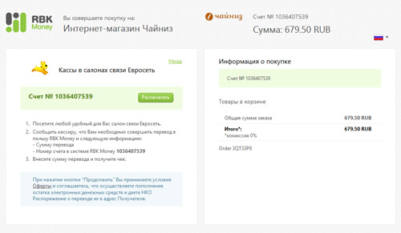

<!DOCTYPE html>
<html lang="ru">
<head>
	<title>Помощь</title>
	<meta charset="utf-8">
	<meta name="keywords" content="">
	<meta name="description" content="">
	<meta name="SKYPE_TOOLBAR" content="SKYPE_TOOLBAR_PARSER_COMPATIBLE">
	<meta http-equiv="X-UA-Compatible" content="IE=edge">
	<meta name="viewport" content="width=device-width, initial-scale=1">
	<link rel="shortcut icon" type="image/vnd.microsoft.icon" href="favicon.ico">
	<link rel="stylesheet" href="css/styles.css">
	<link rel="stylesheet" href="css/faq.css">
	<link rel="stylesheet" href="vendors/jscrollpane/jquery.jscrollpane.css">
	<script src="vendors/jquery-1/jquery-1.11.1.min.js"></script>
	<script src="vendors/jquery-1/jquery-migrate-1.2.1.min.js"></script>
	<script src="js/vendors/bootstrap.min.js"></script>
	<script src="vendors/jscrollpane/jquery.jscrollpane.min.js"></script>
	<script src="vendors/jscrollpane/jquery.mousewheel.js"></script>

	<!-- СКРИПТЫ ДЛЯ ВЕРСТКИ -->
	<!-- подключение jquery.js -->
	<!--<script src="../node_modules/jquery/dist/jquery.js"></script>-->
	<!-- подключение twig.js -->
	<script src="../node_modules/twig/twig.js"></script>
	<!-- файлы с данными для эмуляции работы сайта -->
	<script src="data-emulation/js/data-common.js"></script>
	<script>
		(function ($) {
			//дополнение объекта с данными для эмуляции
			dataEmulation.typeHeader = '_su-active';

			dataEmulation.contentBanner = {
				href: '#',
				src: 'img/offers/offer-banner.jpg',
				alt: 'баннер контента'
			};

			dataEmulation.breadcrumb = [
				{modifier: '', href:'#', title:'Главная'},
				{title:'Помощь'}
			];

			dataEmulation.faq = [
				{
					title: 'Заказ и доставка',
					content: [
						{
							//modifierArticle: '_border _open',
							modifierArticle: '',
							subtitle: 'Как оплатить в салоне Евросеть',
							description:
							'<p>При оформлении заказа на этапе выбора способа оплаты вам необходимо выбрать «Оплатить '
							+ ' в салоне Евросеть» и нажать кнопку «Отправить в доставку». На следующей странице '
							+ ' нажмите кнопку «Оплатить» и вы перейдете на страницу оплаты: </p><br>'
							+ ''
						},
						{
							modifierArticle: '',
							subtitle: 'Для регионов – как отследить посылку?',
							description:
							'<p>Какой бы способ доставки Вы не выбрали: почтой России или курьерскую доставку, после '
							+ 'отправления посылки Вам будет выслан № отправления (трекинг-номер), по которому Вы '
							+ 'сможете отследить, где Ваша посылка находится в данный момент.</p>'
							+ '<ul>'
							+ '<li><b>Посылку, отправленную Почтой России</b> вы можете отслеживать в личном кабинете '
							+ 'в Истории заказов или другим любым удобным вам сервисом, например, '
							+ '<a href="https://www.pochta.ru/Tracking">«Почта России Отслеживание»</a>.</li>'
							+ '<li><b>Посылку, отправленную курьером по России</b> можно отследить на '
							+ '<a rel="nofollow" target="_blank" href="http://www.gdezakaz.ru/">сервисе «Где заказ»</a>. '
							+ 'Вам пришлют смс с Трекинг-номером сразу после передачи заказа в курьерскую службу.</li>'
							+ '</ul>'
						},
						{
							modifierArticle: '',
							subtitle: 'Звонит ли курьер для уточнения времени доставки?',
							description:
							'<p>Обязательно. Курьеры перед выездом к Вам в обязательном порядке перезванивают и координируются с Вами.</p>'
							+ '<p>Обязательно. Курьеры перед выездом к Вам в обязательном порядке перезванивают и координируются с Вами.</p>'
						}
					]
				},
				{
					title: 'Товары, характеристики, описания',
					content: [
						{
							modifierArticle: '',
							subtitle: 'Подзаголовок 1',
							description:
							'<p>При оформлении заказа на этапе выбора способа оплаты вам необходимо выбрать «Оплатить '
							+ ' в салоне Евросеть» и нажать кнопку «Отправить в доставку». На следующей странице '
							+ ' нажмите кнопку «Оплатить» и вы перейдете на страницу оплаты: </p><br>'
							+ ''
						},
						{
							modifierArticle: '',
							subtitle: 'Подзаголовок 2',
							description:
							'<p>Какой бы способ доставки Вы не выбрали: почтой России или курьерскую доставку, после '
							+ 'отправления посылки Вам будет выслан № отправления (трекинг-номер), по которому Вы '
							+ 'сможете отследить, где Ваша посылка находится в данный момент.</p>'
							+ '<ul>'
							+ '<li><b>Посылку, отправленную Почтой России</b> вы можете отслеживать в личном кабинете '
							+ 'в Истории заказов или другим любым удобным вам сервисом, например, '
							+ '<a href="https://www.pochta.ru/Tracking">«Почта России Отслеживание»</a>.</li>'
							+ '<li><b>Посылку, отправленную курьером по России</b> можно отследить на '
							+ '<a rel="nofollow" target="_blank" href="http://www.gdezakaz.ru/">сервисе «Где заказ»</a>. '
							+ 'Вам пришлют смс с Трекинг-номером сразу после передачи заказа в курьерскую службу.</li>'
							+ '</ul>'
						},
						{
							modifierArticle: '',
							subtitle: 'Подзаголовок 3',
							description:
							'<p>Обязательно. Курьеры перед выездом к Вам в обязательном порядке перезванивают и координируются с Вами.</p>'
							+ '<p>Обязательно. Курьеры перед выездом к Вам в обязательном порядке перезванивают и координируются с Вами.</p>'
						}
					]
				}
			];


			$(document).ready(function () {
				//подключение шаблона с контентом
				twig({
					href: "templates/pages/faq_grid-2.twig",
					load: function (template) {
						$("body").html(template.render(dataEmulation));
					}
				});
			});
		})(jQuery);
	</script>
	<!-- /СКРИПТЫ ДЛЯ ВЕРСТКИ -->
</head>
<body>

</body>
</html>